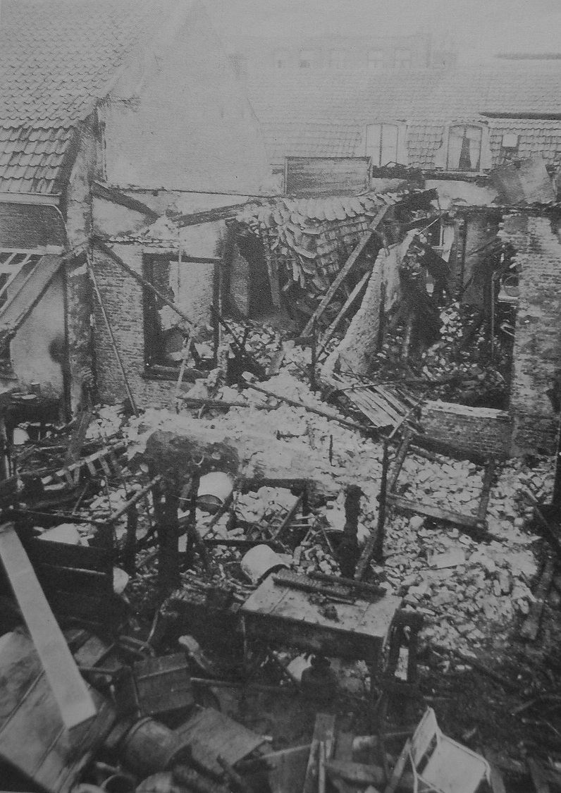
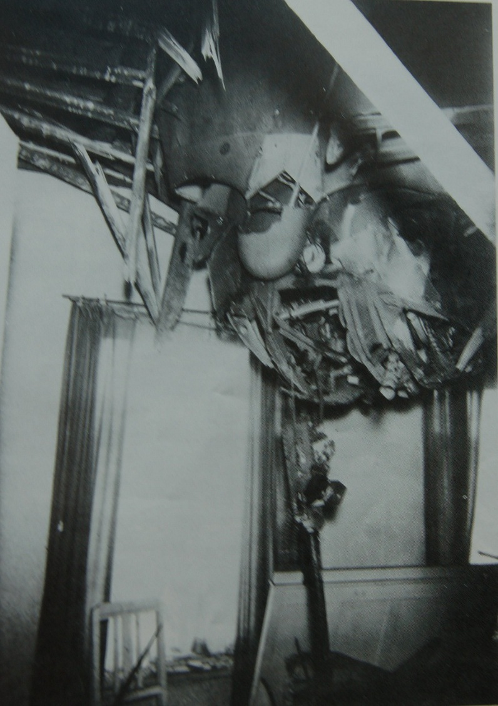

Sergeant David Ellis Williams
Royal Air Force | 1380623 | 97 Squadron | ED928 (OF-B)
Last Flight
On the night of the 22nd and 23rd June 1943, the Lancaster ED928 OF-B set off from Bourn on a mission to Mulheim during which the aircraft came under attack by a fighter over the city of Utrecht in The Netherlands. The plane exploded in mid-air and debris from the Lancaster reined down into a residential neighbourhood, causing major damage to the buildings and more seriously, civilian casualties.
The only survivors of the crash were Alexander Laing and Edward Bellis who were taken as Prisoners of War. The remainder of the crew were buried in Utrecht (Soestbergen) General Cemetery in the Netherlands.
There are a couple of photos taken below from the actual crash that have been kindly supplied by Co Maarschalkerweerd. Co has also authored an excellent detailed piece regarding this flight which was published in the After The Battle Issue 41 magazine.

